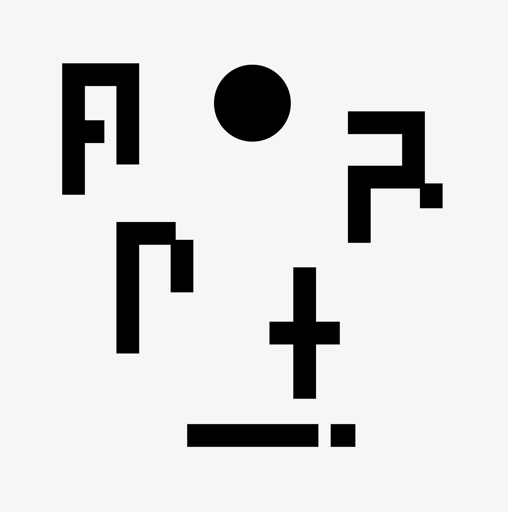

Back
aportrait
Producer / DJ
Turkey
Aportrait is the abstract and experimental new project by Istanbul based artist and Memoire Affective label boss Arman Akıncı, who has been DJ’ing over a decade and has an ongoing radio show ‘’Armanqrtachure’’ at Radio Dinamo.
